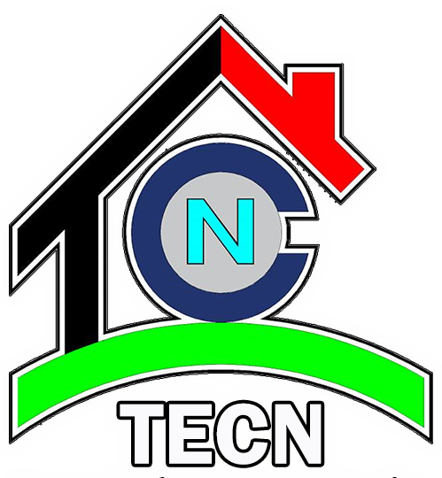

Configuración TECNLAB
LOGO DE LA FIRMA (PNG):
NOMBRE DEL PROYECTO / EMPRESA:
GUARDAR Y CERRAR
📲
Instalar T-CAMERA en tu dispositivo
Agregar a pantalla de inicio
Ahora no
⚙️

TECN EIRL Ingeniería & Consultoría
LATITUD (Y):
Buscando GPS...
LONGITUD (X):
Buscando GPS...
ALTITUD (Z):
0.00 m
HORA LOCAL:
00:00:00
SISTEMA:
T-CAMERA V26